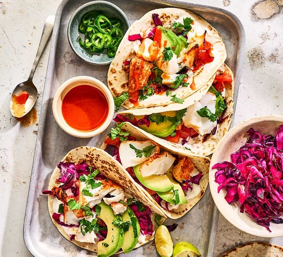

Fish Tacos

For a sensational start to your culinary journey, savor our unparalleled
🌮 Fish Tacos a symphony of flavors that will transport
you to coastal bliss.
Ingredients
- 3 tbsp. extra-virgin olive oil
- Juice of 1 lime
- 2 tsp. chilli powder
- 1 tsp. paprika
- 1/2 tsp. ground cumin
- 1/2 tsp. cayenne pepper
- 700 g cod (or other flaky white fish)
- 1/2 tbsp. vegetable oil
- salt
- Freshly ground black pepper
- 8 corn tortillas
- 1 avocado, diced
- Lime wedges, for serving
- Sour cream, for serving
For the Corn Slaw:
- 50 g mayonnaise
- Juice of 1 lime
- 2 tbsp. freshly chopped coriander
- 1 tbsp. honey
- 200 g shredded purple cabbage
- 150 g sweetcorn
- 1 jalapeño, diced
Directions
-
In a medium shallow bowl, whisk together olive oil, lime juice, paprika,
chilli powder, cumin, and cayenne.
- Add cod, tossing until evenly coated. Let marinate 15 minutes.
-
Meanwhile, make slaw: In a large bowl, whisk together mayonnaise, lime
juice, coriander, and honey. Stir in cabbage, corn, and jalapeño. Season
with salt and pepper.
-
In a large nonstick frying pan over medium-high heat, heat vegetable
oil. Remove cod from marinade and season both sides of each fillet with
salt and pepper. Add fish flesh side-down. Cook until opaque and cooked
through, 3 to 5 minutes per side. Let rest 5 minutes before flaking with
a fork.
-
Assemble tacos: Serve fish over grilled tortillas with corn slaw and
avocado. Squeeze lime juice on top and garnish with sour cream.
- Enjoy!
Home